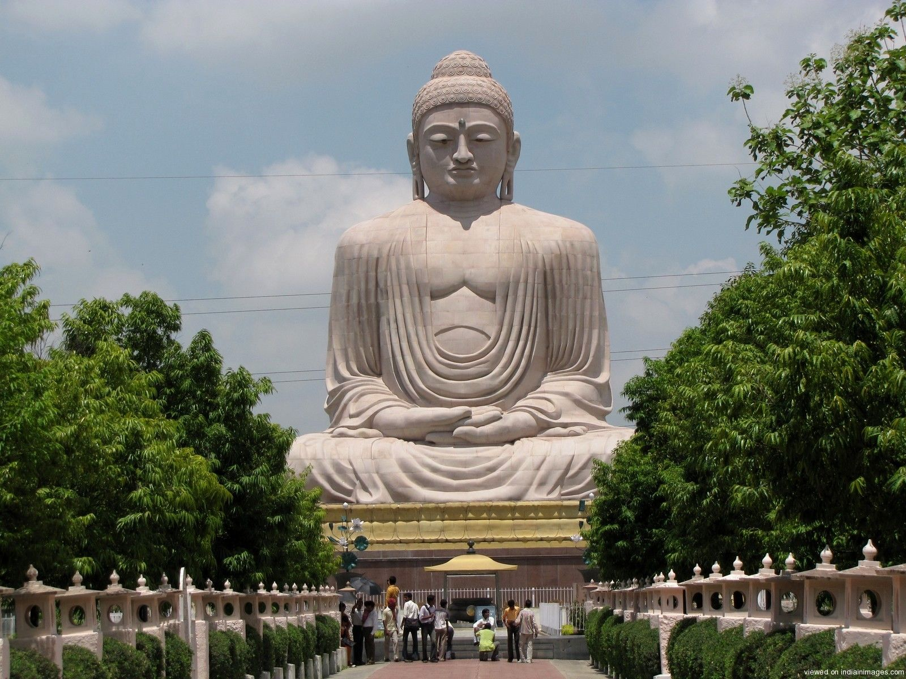
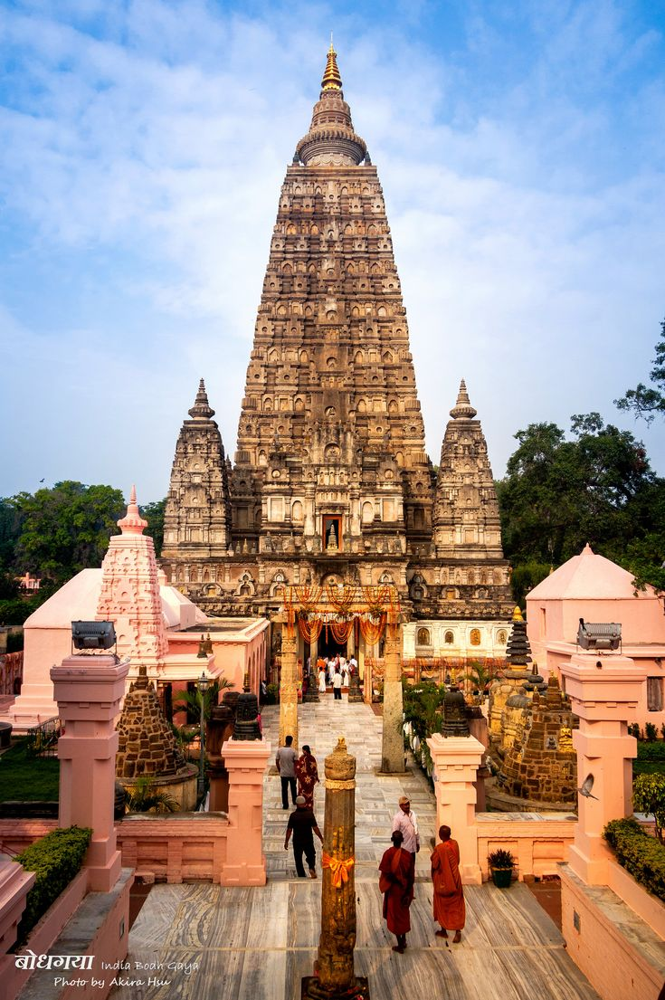
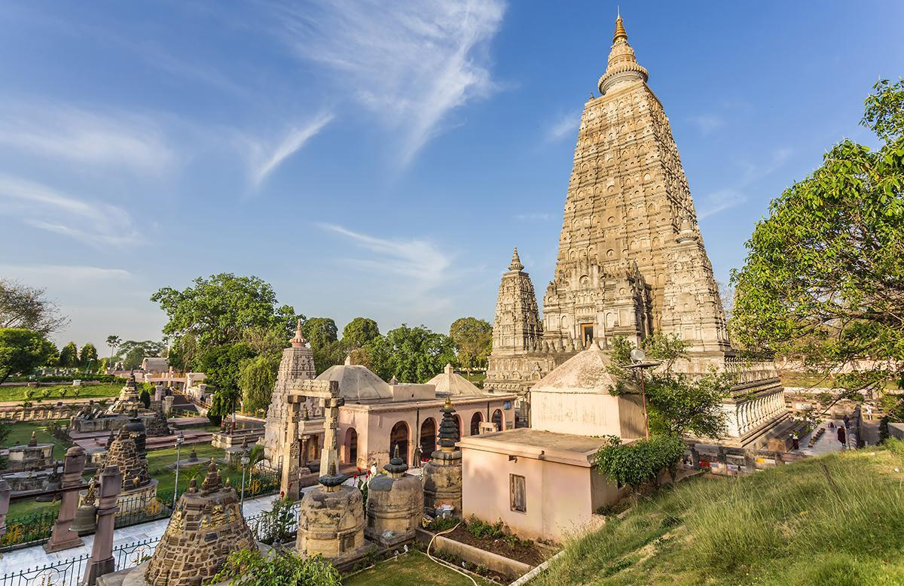

The Mahabodhi Temple (literally: "Great Awakening Temple"), a UNESCO World Heritage Site, is an ancient, Buddhist temple in Bodh Gaya, marking the location where the Buddha is said to have attained enlightenment. The temple stands in the east to the Mahabodhi Tree. Its architectural effect is superb. Its basement is 48 square feet and it rises in the form of a cylindrical pyramid till it reaches its neck, which is cylindrical in shape. The total height of the temple is 170 ft. and on the top of the temple are Chatras which symbolize sovereignty of religion.